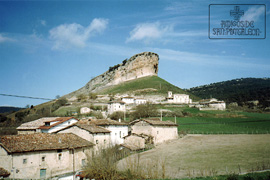

Sirvan estas líneas para dar las gracias a todas las personas y entidades que con nosotros colaboran, entre todos conseguiremos que San Pantaleón se sitúe en el lugar que le corresponde.
- 
-
San Pantaleón de Losa es un pequeño pueblo de pocos vecinos, situado en el Valle de Losa, en la Comarca de las Merindades, en el Norte de la Provincia de Burgos, con una gran riqueza histórica y cultural que hay que promocionar, recuperar y mantener en la medida de lo posible, para que las generaciones venideras puedan disfrutar de este lugar, tanto como hemos disfrutado nosotros y nuestros mayores.
{kind=link}
Sirva también esta página como excusa para visitar San Pantaleón y todo el Valle de Losa, y contemplar in situ su actual estado y el largo camino que queda por delante para mostrar nuestros tesoros paisajísticos, históricos y culturales, y motive a las Instituciones Públicas y Privadas para fomentar con su apoyo este tipo de trabajos.
Esperamos que el esfuerzo realizado, por los miembros de esta Asociación y sus colaboradores para llevar a cabo este trabajo, sea de vuestro agrado, en él hemos puesto todo nuestro cariño.